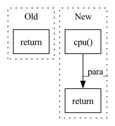

Pattern ID :1871

Before Change
output = x.unsqueeze(0)
else:
output = torch.cat((output, x.unsqueeze(0)), dim=1)
return output
class DQN:
After Change
output = x.unsqueeze(0)
else:
output = torch.cat((output, x.unsqueeze(0)), dim=1)
return output.cpu()
class DQN:
// The class initialisation function.
In pattern: SUPERPATTERN
Frequency: 3
Non-data size: 3
Instances
Fragment ID: 7200037
Project Name: gml16/rl-medical
Commit Name: 9a94d7750c0c8fd52ec83776f4df5e1f09fb9bb6
Time: 2020-02-27
Author: g.m.leroy@outlook.com
File Name: examples/LandmarkDetection/DQN/DQNModelTorch.py
M Class Name: Network3D
N Class Name: Network3D
M Method Name: forward(2)
N Method Name: forward(2)
M Parent Class: nn.Module
N Parent Class: nn.Module
M File Name: examples/LandmarkDetection/DQN/DQNModelTorch.py
N File Name: examples/LandmarkDetection/DQN/DQNModelTorch.py
M Start Line: 89
M End Line: 89
N Start Line: 61
N End Line: 92
'>
Before Change
layer_2_output = nn.functional.relu(self.layer_2(layer_1_output))
output = self.output_layer(layer_2_output)
output = output.view(-1, self.agents, 6)
return output
class Network3D(nn.Module):
After Change
layer_2_output = nn.functional.relu(self.layer_2(layer_1_output))
output = self.output_layer(layer_2_output)
output = output.view(-1, self.agents, 6)
return output.cpu()
class Network3D(nn.Module):
def __init__(self, agents, frame_history, number_actions):
'>
Fragment ID: 7200036
Project Name: gml16/rl-medical
Commit Name: 9a94d7750c0c8fd52ec83776f4df5e1f09fb9bb6
Time: 2020-02-27
Author: g.m.leroy@outlook.com
File Name: examples/LandmarkDetection/DQN/DQNModelTorch.py
M Class Name: MLP
N Class Name: MLP
M Method Name: forward(2)
N Method Name: forward(2)
M Parent Class: nn.Module
N Parent Class: nn.Module
M File Name: examples/LandmarkDetection/DQN/DQNModelTorch.py
N File Name: examples/LandmarkDetection/DQN/DQNModelTorch.py
M Start Line: 23
M End Line: 24
N Start Line: 21
N End Line: 27
'>
Before Change
return loss, None
else:
return None, self.decode(self_attended_context, final_context, context_padding, final_question, question_padding,
context_limited, question_limited,
decoder_vocab, rnn_state=context_rnn_state).data
After Change
decoder_wrapper = self.decoder_wrapper(self_attended_context, final_context, context_padding, final_question, question_padding,
context_limited, question_limited, decoder_vocab, rnn_state=context_rnn_state)
else:
current_token_id = current_token_id.cpu().apply_(self.map_to_full).to(current_token_id.device)
// return (next_token_logits, past) where `past` includes all the states needed to continue generation
logits = decoder_wrapper.next_token_probs(current_token_id)
// print("logits", logits.shape)
return logits, decoder_wrapper
def probs(self, outputs, vocab_pointer_switches, context_question_switches,
context_attention, question_attention,
'>
Fragment ID: 7200038
Project Name: stanford-oval/genienlp
Commit Name: 8750a12fd1be465524e5aa235e507dd421607034
Time: 2020-07-24
Author: s.j.semnani@gmail.com
File Name: genienlp/models/mqan_decoder.py
M Class Name: MQANDecoder
N Class Name: MQANDecoder
M Method Name: forward(10)
N Method Name: forward(8)
M Parent Class: nn.Module
N Parent Class: nn.Module
M File Name: genienlp/models/mqan_decoder.py
N File Name: genienlp/models/mqan_decoder.py
M Start Line: 86
M End Line: 144
N Start Line: 82
N End Line: 149